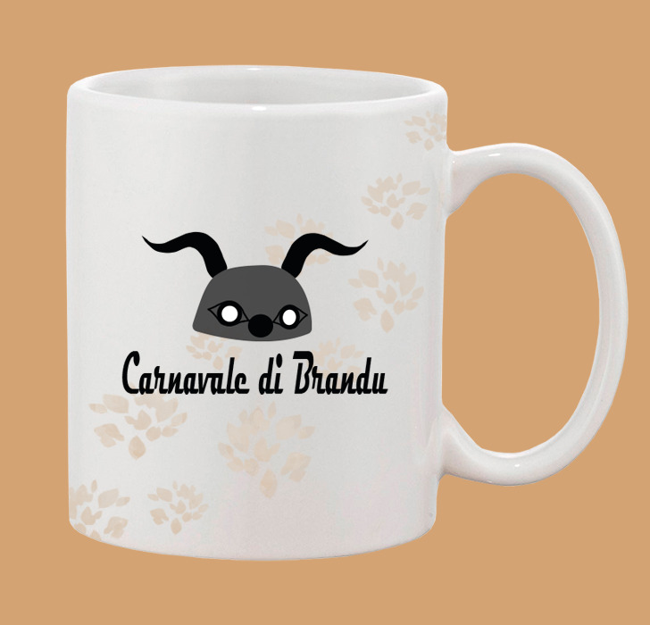
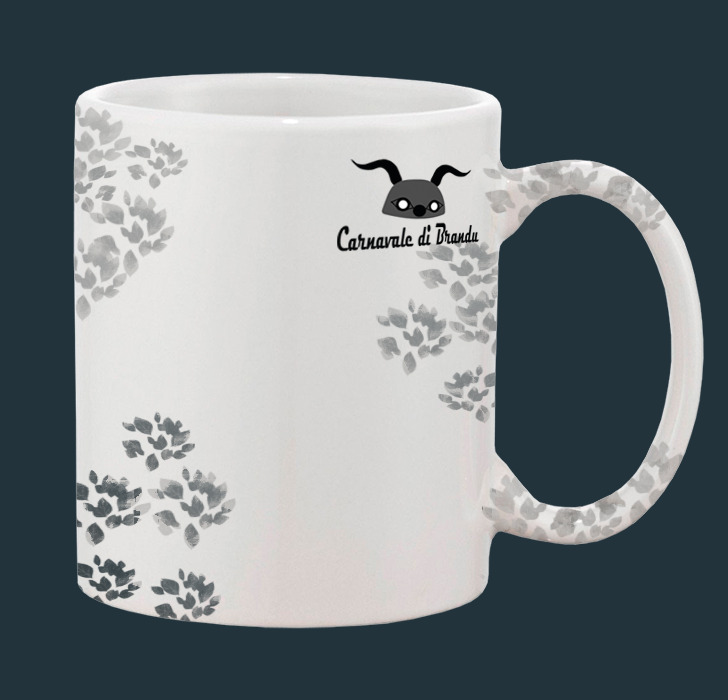
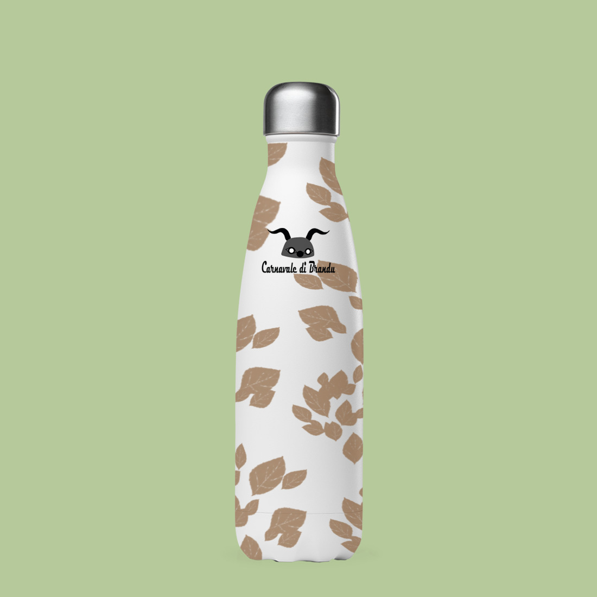

<!DOCTYPE html>
<html lang="en">
  <head>
    <meta charset="UTF-8" />
    <meta name="viewport" content="width=device-width, initial-scale=1.0" />
    <meta http-equiv="X-UA-Compatible" content="ie=edge" />
    <title>Portfolio</title>
    <link rel="stylesheet" type="text/css" href="./projet3.css" />
  </head>
</html>
  <body>
      <h1>Projet n°3</h1>
      
      
      
      
      <p>En rapport avec mon projet n°2, j’ai également eu 
        à réaliser des goodies pour l’événement du carnaval 
        de Brando. L’idée mise en avant à travers les objets 
        était l’aspect plus convivial et familial de l’événement. 
        Les designs sont ici plus simples, moins traditionnels, 
        mais tout en gardant un coté rustique avec le motif 
        «feuille» qui se retrouve sur les articles. Les designs 
        plus doux permettent de s’adapter à tous les âges, genres, 
        et goûts, et donc peuvent plaire à toute la famille de 
        potentiels acheteurs. Les goodies représentent donc quant 
        à eux le coté chaleureux et convivial de la Corse.</p>
      <a class=link href="projets.html" id="return">Retour</a>
  </body>
</html>